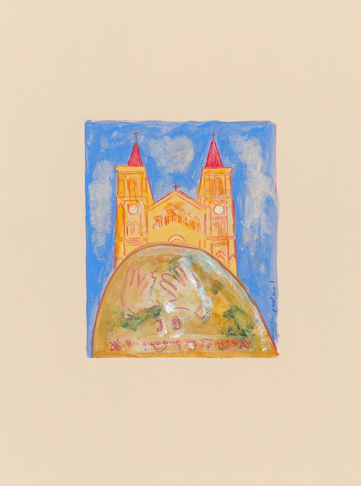
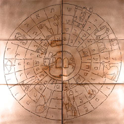

All this has come upon us...
Portfolio of 42 archival pigment prints of acrylic, gouache and colored pencil works on paper exhibited at the Terezin Ghetto Museum from April to July 2014. Includes folio with the titles, Hebrew psalms and descriptions of the all the artworks. Prints housed in an archival clamshell case imprinted with “ALL THIS HAS COME UPON US...” and the artist’s name. Edition limited to 60 numbered sets signed by the artist and ten sets hors commerce A to J.

For centuries, Jews would read verses from the Book of Psalms both in times of great joy and of great suffering.
The Bible tells how pharaoh enslaved the Israelites in Egypt. The Hebrew word for pharaoh can be broken up to peh rah, which means evil speech.

To this day, Jews mourn the destruction of Jerusalem and the First Temple by King Nebuchadnezzar of Babylon. Legend says that when Nebuchadnezzar declared himself a god, he was changed into a beast, partly resembling a lion.

Throughout their long wanderings in exile, Jews were always most at home in their sacred books. Of the most loved were books with prayers, songs and memories of Jerusalem.
The Bible calls idolatry an “abomination.” When King Antiochus IV conquered Jerusalem, to promote Greek culture he forbid Jewish religious practices, even desecrating the Holy Temple with an idol of Zeus. The festival of Hanukkah celebrates the Temple’s re-dedication following the victory over Antiochus.

After Titus destroyed Jerusalem in the year 70, the Romans built the city Aelia Capitolina on its ruins. With the loss of their homeland, Jews moved to distant lands. Though dispersed, they refused to abandon their faith.

Though Jerusalem is called “City of Peace,” no place has been fought over more.
On their way to free Jerusalem from the Saracens, Crusaders killed thousands of Jews in the Rhine Valley. A chronicle asserted, “We go to fight God’s enemies in the East; but before our eyes are Jews, a race more hostile to God than any other.” Of the massacre in Mainz, Solomon bar Samson lamented, “Why did the heavens not darken when eleven hundred souls were slaughtered?”

The First Crusade capture of Jerusalem resulted in the massacre of Muslims in their mosque and the burning of Jews in the main synagogue. Some Muslims and Jews survived, either escaping or taken prisoner to be ransomed.

The Third Crusade, led by Richard the Lion-Heart, stirred anti-Jewish riots across England. In York, Jews gathered for protection in Clifford’s Tower. Rather than be butchered by the mob outside, many Jews took their own lives. Those who surrendered were murdered. All records of debts owed to Jews were burned.

The ultimate act of Kiddush ha-Shem, sanctification of God’s holy name, is when a Jew sacrifices his or her life rather than transgressing any of God’s cardinal laws. Eyewitnesses chronicled a number of Jewish communal self- martyrdoms, which came to be revered as the purest expression of the devotion to God.
In medieval Christian art, Ecclesia and Synagoga personify the victorious Church and defeated Judaism. Often sculpted as young women, Ecclesia is erect and triumphant in contrast to the blindfolded and dejected Synagoga.
The Lateran Council in 1215 decreed that Jews “be publicly differentiated by their clothing.” Throughout Europe, Jews were forced to wear a “Badge of Shame,” often a yellow circle. Yellow implied wickedness and the circular form of a coin might have signified the Jews’ role as moneylender.

The Talmud is a collection of ancient rabbinic writings on Jewish law and tradition. In the Jewish religion, the Talmud is second only to the Bible. Condemned as blasphemous to Christianity and a barrier to converting the Jews, the Talmud was repeatedly censored and burned. The most infamous burning was in Paris. A thousand years earlier when Romans wrapped Rabbi Hanina in a Torah scroll and set it on fire his disciples called out, “Rabbi, what do you see?” His answer expressed the indestructible nature of the Law, “The parchment is burning but the letters are soaring on high.”
The Judensau (Jew’s pig) is a derogatory medieval depiction of Jews in obscene contact with a large sow. The image reflected the tendency to dehumanize Jews iconographically. The pig was used intentionally since for Jews it is an object of religious prohibition and revulsion. Over 25 Judensau remain on German churches. During the Nazi period, school children were taken to see them.
The Black Death annihilated a third of Europe’s population. Rumor attributed the devastating plague to an international conspiracy of Jewry to poison all Christendom. Jews arrested and tortured not surprisingly confessed to anything. In hundreds of towns, falsely accused Jews were butchered and burned to death.
Before the Black Death massacre in Erfurt, Germany, Jews preemptively hid their valuables including a ceremonial gold wedding ring unearthed in 1998. To no avail, Pope Clement VI acknowledged that Jews died of the plague as frequently as Christians and there was no reason to blame them.

One Easter, during a devastating pogrom, Prague’s Jews fled for safety to their synagogues. Rabbi Avigdor Kara, who lost his entire family, wrote the eulogy All that Suffering, still read each year on the holiest day of the Jewish calendar, Yom Kippur. For centuries bloodstains remained on a synagogue’s walls as a reminder of the slaughter. Legend says that whenever there is Jewish suffering in the world, the walls again turn red.

“Humiliation and wretchedness were stamped upon them,” says the Qur’an regarding the Jews. As a rule, Jews living in Muslim lands were allowed to practice their religion as dhimmis (protected people). Yet, at times anti-Jewish sentiment surfaced if Jews became too influential. In Fez, Morocco, when the Sultan appointed a Jew as Prime Minister the town revolted. The Sultan and his Minister were assassinated and the Jews massacred.
The Spanish Inquisition was initiated to prevent conversos from engaging in Jewish practices, which as Christians they were to have rejected. Those who in secret continued to practice Judaism were called marranos. At public spectacles, heretics were burned at the stake in an auto-da-fe, “act of faith.”

King Ferdinand and Queen Isabella of Spain expelled from their lands the largest and most distinguished Jewish community in Europe. Jews who converted were welcome to stay.

The word “ghetto” originated from the name of the Jewish quarter in Venice where Jews were forced to live. During World War II, when Jews were again confined to ghettos, they were degraded, starved and murdered.
In both Christian and Muslim countries, it was common for laws to mandate that synagogues could not be taller than churches or mosques.

God's governance of the world in accordance with justice is called Providence. Yet, how to explain the prosperity of the wicked and the suffering of the just? The explanation is the doctrine of reward and punishment in an afterlife when the good will be rewarded and the wicked punished.

Jewish messianic yearnings surged during times of great suffering. Shlomo Molcho, a Portuguese mystic, preached the certainty of imminent messianic redemption. He also may have declared himself the messiah to his disciples. After a brief remarkable career, the would-be messiah was burned at the stake.

In front of cathedrals and churches, Passion Plays re-enacted the trial and crucifixion of Jesus, blaming Jews as collectively and eternally guilty of deicide. Not infrequently, enraged audiences attacked Jews for revenge.

Rabbinic sages say in the human heart are two impulses, good and evil. The wicked, influenced by the evil impulse, destroyed the Temple and exiled the Jews from their land. Against the evil impulse, the Torah is the great antidote.

When Cossacks led by Bohdan Chmielnicki slaughtered half of Ukrainian and Polish Jewry, Jews named the massacres The Evil Decrees of ‘48 and ’49. Frequently employed by the nobility as tax collectors, Jews were a convenient scapegoat. Of the savagery an eyewitness wrote, “Some were cut into pieces, others were ordered to dig graves into which Jewish women and children were thrown and buried alive. Jews were given rifles and ordered to kill each other...”

Every year, when the annual reading of the Torah concludes and begins anew the congregation says in Hebrew Chazak, chazak, v’nitchazek meaning “Be strong, be strong, and may we strengthen one another.”

Of the repressive laws under Czar Nicholas I, the harshest was the Cantonist law requiring Jewish boys from age 12 to serve in the Russian army 25 years. The straps of their tefillin were twisted into whips to flog the boys into icy rivers to be baptized. To escape conversion, many drowned themselves.
Pogrom is a Russian word meaning “to wreak havoc.” Russian pogroms against Jews were frequent and devastating. Jews referred to the violence in the south of Russia as the “storms in the negev,” negev being a biblical word for the south. Little or no effort was made to bring the attackers to justice.

The “blood libel,” also known as “ritual murder,” refers to the false allegation that Jews kill Christians to use their blood in the baking of Passover matzah (unleavened bread). The accusation, dating back to the Middle Ages, is especially ludicrous because Jewish law prohibits consuming any blood. In 1899, a Jew from the Bohemian town of Polná was convicted of the murder of a Christian girl. A ritually inspired crime was alleged to be the motive.

“In every generation they rise up against us.” Jews recite these words each year at their seder meal on Passover, the festival that celebrates the deliverance of the Jewish people from slavery in Egypt.
On November 9–10, 1938, the Nazis instigated state sanctioned riots against the Jewish communities of Germany, Austria, and the Sudetenland. These attacks came to be known as Kristallnacht (“Night of Broken Glass”), a reference to the shattered windows of synagogues, Jewish businesses and homes looted and destroyed.

The wearing of a yellow badge, compulsory for Jews in some parts of Europe in the Middle Ages, was revived by the Nazi regime. A Jew caught without a badge was fined, imprisoned, or shot.

Among the most poignant documents of the Holocaust are poems and drawings by the imprisoned children of the Terezin Concentration Camp. Depicted is their daily misery as well as their hopes. Perhaps the most famous of the poems is “I never saw another butterfly,” by Pavel Friedman who was killed in Auschwitz. Terezin was unique in that it was created to conceal the German genocide of the Jews. This ghetto was the site of an International Red Cross Committee delegation visit in 1944, when the real suffering in the camp was hidden. With its many artists and intellectuals, culture flourished in Terezin - together with disease, starvation and constant fear of deportations to the east.
Arbeit macht frei, a German phrase meaning, "work makes free" was placed over the entrances to a number of Nazi concentration camps during World War II. The motto, of course, was a mockery, a false promise that those who worked hard would eventually be released.

In September 1943, more than five thousand Jews were deported from Terezin to Auschwitz. Unlike previous transports, they received unusual privileges: they did not undergo the usual selections and families were not divided up into various sections in the camp - hence the “family camp.” On the night of March 8, 1944 the Jewish holiday of Purim, exactly six months after their arrival, the family camp prisoners still living from that bleak September – 3792 persons - were murdered in the gas chambers. The absolute majority of them were Czech Jews. It was the deadliest night during the German occupation of the Czech lands.
From slavery in Egypt to the loss of their homeland, from persecution to exile, from pogroms to near annihilation, through faith the Jews endured while their enemies vanished.
The Hebrew title of the book of Psalms is the word tehillim, which means “Praises.” Psalms are recited by Jews individually and communally to offer praise and thanksgiving to God.
The Mourner’s Kaddish is a prayer recited in memory of the dead. Yet, the prayer makes no mention of death, loss or mourning. Nor is there mention of the person who died. Its theme is the greatness of God.
Psalm
Psalm 44:18 All this has come upon us, but we have not forgotten You, or been false to Your covenantFor centuries, Jews would read verses from the Book of Psalms both in times of great joy and of great suffering.
Pharaoh
Psalm 10:7 His mouth is full of curses, deceit and oppression; on the tip of his tongue are mischief and evilThe Bible tells how pharaoh enslaved the Israelites in Egypt. The Hebrew word for pharaoh can be broken up to peh rah, which means evil speech.
Nebuchadnezzar
Psalm 57:5 I am surrounded by lions, their teeth are spears and arrows and their tongue a sharp swordTo this day, Jews mourn the destruction of Jerusalem and the First Temple by King Nebuchadnezzar of Babylon. Legend says that when Nebuchadnezzar declared himself a god, he was changed into a beast, partly resembling a lion.
Exile
Psalm 137:1 By the rivers of Babylon we sat and wept as we remembered ZionThroughout their long wanderings in exile, Jews were always most at home in their sacred books. Of the most loved were books with prayers, songs and memories of Jerusalem.
Abomination
Psalm 27:3 Though an army surrounds me, my heart will not fear; even if attacked I am confidentThe Bible calls idolatry an “abomination.” When King Antiochus IV conquered Jerusalem, to promote Greek culture he forbid Jewish religious practices, even desecrating the Holy Temple with an idol of Zeus. The festival of Hanukkah celebrates the Temple’s re-dedication following the victory over Antiochus.
Titus 70
Psalm 79 O God, pagans have conquered Your land, defiled Your Holy Temple and left Jerusalem in ruinsAfter Titus destroyed Jerusalem in the year 70, the Romans built the city Aelia Capitolina on its ruins. With the loss of their homeland, Jews moved to distant lands. Though dispersed, they refused to abandon their faith.
Prayer
Psalm 122:6 Pray for the peace of Jerusalem: may those who love you be at peaceThough Jerusalem is called “City of Peace,” no place has been fought over more.
Why Did the Heavens Not Darken? 1096
Psalm 94:21 The wicked gather together against the soul of the righteous and condemn innocent bloodOn their way to free Jerusalem from the Saracens, Crusaders killed thousands of Jews in the Rhine Valley. A chronicle asserted, “We go to fight God’s enemies in the East; but before our eyes are Jews, a race more hostile to God than any other.” Of the massacre in Mainz, Solomon bar Samson lamented, “Why did the heavens not darken when eleven hundred souls were slaughtered?”
The Holy City 1099
Psalm 3:3 Many attack me; many say about me, “God will not help him”The First Crusade capture of Jerusalem resulted in the massacre of Muslims in their mosque and the burning of Jews in the main synagogue. Some Muslims and Jews survived, either escaping or taken prisoner to be ransomed.
York Tower 1189
Psalm 142:5 I look for someone to help me, I have no friend; nowhere can I flee, no one cares about meThe Third Crusade, led by Richard the Lion-Heart, stirred anti-Jewish riots across England. In York, Jews gathered for protection in Clifford’s Tower. Rather than be butchered by the mob outside, many Jews took their own lives. Those who surrendered were murdered. All records of debts owed to Jews were burned.
Martyrdom
Psalm 35:10 All my bones will say, “Lord, who is like You?”The ultimate act of Kiddush ha-Shem, sanctification of God’s holy name, is when a Jew sacrifices his or her life rather than transgressing any of God’s cardinal laws. Eyewitnesses chronicled a number of Jewish communal self- martyrdoms, which came to be revered as the purest expression of the devotion to God.
Ecclesia and Synagoga
Psalm 119:78 Let the proud be ashamed, for they have slandered me without cause; but I will study Your commandmentsIn medieval Christian art, Ecclesia and Synagoga personify the victorious Church and defeated Judaism. Often sculpted as young women, Ecclesia is erect and triumphant in contrast to the blindfolded and dejected Synagoga.
Circles
Psalm 25:2 My God, in You I trust, may I not be ashamed; may my enemies not triumph over meThe Lateran Council in 1215 decreed that Jews “be publicly differentiated by their clothing.” Throughout Europe, Jews were forced to wear a “Badge of Shame,” often a yellow circle. Yellow implied wickedness and the circular form of a coin might have signified the Jews’ role as moneylender.
Letters Soaring 1240
Psalm 119:160 All Your words are true and eternalThe Talmud is a collection of ancient rabbinic writings on Jewish law and tradition. In the Jewish religion, the Talmud is second only to the Bible. Condemned as blasphemous to Christianity and a barrier to converting the Jews, the Talmud was repeatedly censored and burned. The most infamous burning was in Paris. A thousand years earlier when Romans wrapped Rabbi Hanina in a Torah scroll and set it on fire his disciples called out, “Rabbi, what do you see?” His answer expressed the indestructible nature of the Law, “The parchment is burning but the letters are soaring on high.”
Judensau
Psalm 22:8 All who see me laugh at me; they smirk their lips, they shake their headsThe Judensau (Jew’s pig) is a derogatory medieval depiction of Jews in obscene contact with a large sow. The image reflected the tendency to dehumanize Jews iconographically. The pig was used intentionally since for Jews it is an object of religious prohibition and revulsion. Over 25 Judensau remain on German churches. During the Nazi period, school children were taken to see them.
Black Plague 1348-1349
Psalm 35:16 With malicious mocking they gnash their teeth at meThe Black Death annihilated a third of Europe’s population. Rumor attributed the devastating plague to an international conspiracy of Jewry to poison all Christendom. Jews arrested and tortured not surprisingly confessed to anything. In hundreds of towns, falsely accused Jews were butchered and burned to death.
Erfurt 1349
Psalm 35:11 False witnesses testify against me about things I know nothing ofBefore the Black Death massacre in Erfurt, Germany, Jews preemptively hid their valuables including a ceremonial gold wedding ring unearthed in 1998. To no avail, Pope Clement VI acknowledged that Jews died of the plague as frequently as Christians and there was no reason to blame them.
All that Suffering 1389
Psalm 59:5 Though I have done nothing wrong they prepare to attack meOne Easter, during a devastating pogrom, Prague’s Jews fled for safety to their synagogues. Rabbi Avigdor Kara, who lost his entire family, wrote the eulogy All that Suffering, still read each year on the holiest day of the Jewish calendar, Yom Kippur. For centuries bloodstains remained on a synagogue’s walls as a reminder of the slaughter. Legend says that whenever there is Jewish suffering in the world, the walls again turn red.
Fez 1465
Psalm 37:14 Evil men draw their swords, bend their bows, to kill the oppressed and needy, to slay the decent“Humiliation and wretchedness were stamped upon them,” says the Qur’an regarding the Jews. As a rule, Jews living in Muslim lands were allowed to practice their religion as dhimmis (protected people). Yet, at times anti-Jewish sentiment surfaced if Jews became too influential. In Fez, Morocco, when the Sultan appointed a Jew as Prime Minister the town revolted. The Sultan and his Minister were assassinated and the Jews massacred.
Auto da Fe
Psalm 102:4 For my days are consumed in smoke, and my bones burn as in a furnaceThe Spanish Inquisition was initiated to prevent conversos from engaging in Jewish practices, which as Christians they were to have rejected. Those who in secret continued to practice Judaism were called marranos. At public spectacles, heretics were burned at the stake in an auto-da-fe, “act of faith.”
Expulsion 1492
Psalm 119:54 Your laws are songs to me wherever I may liveKing Ferdinand and Queen Isabella of Spain expelled from their lands the largest and most distinguished Jewish community in Europe. Jews who converted were welcome to stay.
Ghetto 1516
Psalm 91:11 For He will command His angels to protect you wherever you goThe word “ghetto” originated from the name of the Jewish quarter in Venice where Jews were forced to live. During World War II, when Jews were again confined to ghettos, they were degraded, starved and murdered.
Shadow
Psalm 13:3 How long will I have troubling thoughts, sorrow in my heart every day? How long shall my enemy dominate me?In both Christian and Muslim countries, it was common for laws to mandate that synagogues could not be taller than churches or mosques.
Providence
Psalm 112:10 The wicked will see it and be angry; he will gnash his teeth and waste away;the hope of the wicked will amount to nothingGod's governance of the world in accordance with justice is called Providence. Yet, how to explain the prosperity of the wicked and the suffering of the just? The explanation is the doctrine of reward and punishment in an afterlife when the good will be rewarded and the wicked punished.
Signature of a False Messiah 1532
Psalm 45:2 Noble words stir my heart; I speak my deeds to the king, my tongue is the pen of a skillful scribeJewish messianic yearnings surged during times of great suffering. Shlomo Molcho, a Portuguese mystic, preached the certainty of imminent messianic redemption. He also may have declared himself the messiah to his disciples. After a brief remarkable career, the would-be messiah was burned at the stake.
Inherited Hatred
Psalm 31:14 I hear the slander of manyIn front of cathedrals and churches, Passion Plays re-enacted the trial and crucifixion of Jesus, blaming Jews as collectively and eternally guilty of deicide. Not infrequently, enraged audiences attacked Jews for revenge.
Good and Evil
Psalm 94:3 How long will the wicked triumph?Rabbinic sages say in the human heart are two impulses, good and evil. The wicked, influenced by the evil impulse, destroyed the Temple and exiled the Jews from their land. Against the evil impulse, the Torah is the great antidote.
Evil Decrees 1648-1649
Psalm 22:12 Do not be far from me, for trouble is near and there is no one to helpWhen Cossacks led by Bohdan Chmielnicki slaughtered half of Ukrainian and Polish Jewry, Jews named the massacres The Evil Decrees of ‘48 and ’49. Frequently employed by the nobility as tax collectors, Jews were a convenient scapegoat. Of the savagery an eyewitness wrote, “Some were cut into pieces, others were ordered to dig graves into which Jewish women and children were thrown and buried alive. Jews were given rifles and ordered to kill each other...”
Be Strong, Be Strong
Psalm 60:6 You give Your loyal followers a banner around which to rally toEvery year, when the annual reading of the Torah concludes and begins anew the congregation says in Hebrew Chazak, chazak, v’nitchazek meaning “Be strong, be strong, and may we strengthen one another.”
Cantonists 1827
Psalm 119:141 I am small and despised, yet I have not forgotten Your teachingsOf the repressive laws under Czar Nicholas I, the harshest was the Cantonist law requiring Jewish boys from age 12 to serve in the Russian army 25 years. The straps of their tefillin were twisted into whips to flog the boys into icy rivers to be baptized. To escape conversion, many drowned themselves.
Storms in the South 1881-1884
Psalm 55:6 Fear and trembling grips me; horror overwhelms mePogrom is a Russian word meaning “to wreak havoc.” Russian pogroms against Jews were frequent and devastating. Jews referred to the violence in the south of Russia as the “storms in the negev,” negev being a biblical word for the south. Little or no effort was made to bring the attackers to justice.
Blood Libel Polná 1899
Psalm 16:4 I will have no part in their drink-offerings of bloodThe “blood libel,” also known as “ritual murder,” refers to the false allegation that Jews kill Christians to use their blood in the baking of Passover matzah (unleavened bread). The accusation, dating back to the Middle Ages, is especially ludicrous because Jewish law prohibits consuming any blood. In 1899, a Jew from the Bohemian town of Polná was convicted of the murder of a Christian girl. A ritually inspired crime was alleged to be the motive.
Every Generation
Psalm 25:19 See how many are my enemies, and how unjustly they hate me“In every generation they rise up against us.” Jews recite these words each year at their seder meal on Passover, the festival that celebrates the deliverance of the Jewish people from slavery in Egypt.
Kristallnacht 1938
Psalm 74:7 They burned Your sanctuary to the ground; desecrating the dwelling place of Your nameOn November 9–10, 1938, the Nazis instigated state sanctioned riots against the Jewish communities of Germany, Austria, and the Sudetenland. These attacks came to be known as Kristallnacht (“Night of Broken Glass”), a reference to the shattered windows of synagogues, Jewish businesses and homes looted and destroyed.
Yellow Star
Psalm 79:4 We are mocked by our neighbors, an object of scorn and ridicule to those around usThe wearing of a yellow badge, compulsory for Jews in some parts of Europe in the Middle Ages, was revived by the Nazi regime. A Jew caught without a badge was fined, imprisoned, or shot.
Terezin
Psalm 143:3 For the enemy has persecuted me; he has crushed my life down to the groundAmong the most poignant documents of the Holocaust are poems and drawings by the imprisoned children of the Terezin Concentration Camp. Depicted is their daily misery as well as their hopes. Perhaps the most famous of the poems is “I never saw another butterfly,” by Pavel Friedman who was killed in Auschwitz. Terezin was unique in that it was created to conceal the German genocide of the Jews. This ghetto was the site of an International Red Cross Committee delegation visit in 1944, when the real suffering in the camp was hidden. With its many artists and intellectuals, culture flourished in Terezin - together with disease, starvation and constant fear of deportations to the east.
Arbeit Macht Frei
Psalm 83:5 They say, “Let us destroy them as a nation so Israel’ s name will be remembered no more”Arbeit macht frei, a German phrase meaning, "work makes free" was placed over the entrances to a number of Nazi concentration camps during World War II. The motto, of course, was a mockery, a false promise that those who worked hard would eventually be released.
Czech Family Camp
Psalm 148:12 Young men and women, the old with the childrenIn September 1943, more than five thousand Jews were deported from Terezin to Auschwitz. Unlike previous transports, they received unusual privileges: they did not undergo the usual selections and families were not divided up into various sections in the camp - hence the “family camp.” On the night of March 8, 1944 the Jewish holiday of Purim, exactly six months after their arrival, the family camp prisoners still living from that bleak September – 3792 persons - were murdered in the gas chambers. The absolute majority of them were Czech Jews. It was the deadliest night during the German occupation of the Czech lands.
Faith
Psalm 119:87 They almost wiped me off the earth but I did not abandon Your commandmentsFrom slavery in Egypt to the loss of their homeland, from persecution to exile, from pogroms to near annihilation, through faith the Jews endured while their enemies vanished.
Praise
Psalm 8:2 How majestic is Your name throughout the earthThe Hebrew title of the book of Psalms is the word tehillim, which means “Praises.” Psalms are recited by Jews individually and communally to offer praise and thanksgiving to God.
Kaddish
Psalm 103:15 Man, his days are like those of grass, as a flower of the field that bloomsThe Mourner’s Kaddish is a prayer recited in memory of the dead. Yet, the prayer makes no mention of death, loss or mourning. Nor is there mention of the person who died. Its theme is the greatness of God.
Kaddish for Dąbrowa Białostocka
Yiddish Dabrowa
A Torah pointer (yad) holding a quill writes Dąbrowa in Yiddish letters on a map of the region in northeast Poland. The Yiddish is copied from a 1929 postcard written by Dąbrowa’s Rabbi Moshe Gershon Movshowitz.Dąbrowa Białostocka on My Mind
A leather strap of tefillin for the head encircles the town as it looked in a 1938 photo.Polish Havdalah Spice Box with Stork Nest
Indicating how white storks nest in Poland more than in any other country, a stork makes its nest on a Polish havdalah spice box tower.Sabbath Clouds
Two clouds in the shape of challahs recall the double portion of manna that fell from heaven on Friday so that the Children of Israel did not have to work on the Sabbath to gather manna.Herring on a Bialy
A herring, a common shtetl food, is sandwiched in a bialy. The bialy was invented 70 kilometres away in Białystok, the city, which adds its name to Dąbrowa to differentiate the town from many others in Poland with the same name.Havdalah Spice Box in Shape of Dąbrowa Białostocka Windmill
In Dąbrowa there were several windmills constructed of wood. After the German destruction of the town, one made of stone remained.Simhat Torah Flag with Storks
Storks replace the traditional two lions, which in Jewish iconography, guard the Ten Commandments.Hanukkah Lamp with Bisons
Since numerous bisons freely roam the Bialowieza Forest, 62 kilometres southeast of Białystok, and many Polish companies use bisons in their logos, a drawing of a Hanukkah Lamp has bisons instead of the traditional lions.Matzoh Moon Over Dąbrowa
A round matzoh in the sky represents how Passover is always celebrated under a full moon.Havdalah Spice Box as Corn Poppy
A havdalah spice box resembles Poland’s national flower, a corn poppy.Tomb of Menachem Mendel
The most prominent religious leader of Dąbrowa was Rabbi Menachem Mendel who lived until about 1895. Mendel worked to improve health care with rabbis from neighboring towns such as Grodno and Lublin. He was buried in a mausoleum that no longer exists. It is said that Jews and gentiles would visit his grave to pray for his blessing.Dąbrowa Białostocka Synagogue in Shape of Tzedakah (Charity) Box
Tzedakah boxes are often placed in synagogues for people to donate money to the needy. The box has a slot in the top for inserting coins and comes in a wide variety of shapes.Broken Menorah Covered with Oak Leaves
The Germans burned Dąbrowa Białostocka to the ground in 1941. In keeping with that, a broken menorah covered with oak leaves, another reference to the meaning of Dąbrowa, indicates that Jewish life in Dąbrowa Białostocka has been shattered.Six-Pointed Stars
In the series, the only explicit Holocaust iconography is a drawing of a yellow fabric with the six-pointed star Jews were forced to wear.A History of Dąbrowa Białostocka
The Torah as a “Tree of Life” is cut down, which in Jewish iconography symbolizes a life cut short, and regrows as an oak tree in the Dąbrowa coat of arms.

Dąbrowa Białostocka Today
By 1899, Dąbrowa had a Jewish population that was 75% of the town’s total population. Currently, no Jews live there. In remembrance, one of the Jewish cemetery’s few remaining tombstones is symbolically portrayed before Dąbrowa’s Catholic church.Mozart and Prague
Portfolio of 27 archival pigment prints exhibited in 2016 at the Klementinum in Prague. Includes folio with the titles and descriptions of all the images. Prints housed in an archival clamshell case gold stamped on the cover “Mozart and Prague” and the artist’s name. Edition limited to 50 numbered sets signed by the artist and five sets hors commerce A to E signed by the artist.
The City of Mozart
Although history and legend merge regarding Mozart’s five visits to Prague, both make clear that Prague adored Mozart. And Mozart, in turn, loved Prague. Mozart is claimed to have said, "Meine Prager verstehen mich." ("My Praguers understand me"), and he wrote of Prague’s theater orchestra, “My orchestra is in Prague.” Arthur Schurig, one of Mozart’s biographers, noted, “If any town has the right to be called his city, then it is not Salzburg, which W.A. Mozart hated, it is not Vienna, which left him to starve and forgot him in a mass grave, but only his golden Prague.”Prince Archbishop Colloredo
Prince Archbishop Colloredo condescendingly regarded musicians as mere servants to be employed at their master’s whim. Mozart objected to being so disdained and sought greater freedom both as a performer and as a composer. After the archbishop accepted Mozart's second letter of resignation, the archbishop’s chief steward, Count Arco, literally dismissed the composer "with a kick in the arse."Bertramka
Bertramka is a villa in Prague where Mozart is said to have spent happy days as a frequent guest. Built at the turn of the 17th century, Bertramka was the summerhouse of the Czech soprano Josepha Duschek and her husband, piano teacher and composer Franz Xaver Duschek. The Duscheks are credited with having been the first to invite Mozart to Prague.“Too many notes”
Emperor Joseph II commissioned the opera The Abduction from the Seraglio, which premiered in Vienna in 1782. It is said that after the opera’s premiere the emperor complained to Mozart, “That is too fine for my ears. There are too many notes.” Mozart reportedly replied, “There are exactly as many notes as there should be.” But according to the French writer Stendhal, Mozart later felt that perhaps the emperor had not been wrong.Pasha’s Palace on the Vltava
The Abduction from the Seraglio was inspired by a fascination with the exotic culture of the Ottoman Empire, which was no longer a military threat to the Hapsburgs. Mozart’s biographer, Franz Xaver Niemetschek, attended the opera’s Prague premiere in 1783 and later wrote that the audience was overwhelmed.The Marriage of Figaro
No opera had ever been more popular in Prague than The Marriage of Figaro. Mozart reported to a friend, “… they do not talk about anything else here than—Figaro. Nothing else is being played, blown, sung or whistled than—Figaro, no opera attended than—Figaro. And forever Figaro! Certainly a great honor for me!” The opera orchestra’s conductor, Josef Strobach, was fond of saying that at each Figaro performance the members of the orchestra were so spellbound by the music that they would have enjoyed playing the music all over again.Inside the Klementinum
On January 13, 1787, Mozart visited the Klementinum’s magnificent library and is said to have played the organ in its Mirror Chapel. Describing his impressions in a letter to a friend in Vienna, Mozart wrote, “…viewing everything with utmost interest…our eyes had almost fallen out of their sockets for all the sightseeing…” A Mozart Memorial collection was established at the Klementinum’s University Library in1837, four years prior to the founding of the Salzburg Mozarteum. The Klementinum’s was the first Mozarteum in the world and the first-ever bust of Mozart can be found in the foyer of the Mirror Chapel.“Prague” Symphony
The difficult woodwind passages in Mozart’s Symphony #38 in D Major, popularly known at the “Prague” Symphony, highlighted the talents for which the wind musicians of Bohemia were famous. Praguers must have been delighted that the symphony’s last movement quoted an aria from Figaro since Figaro was such an enormous success in Prague. Yet the symphony may not have been initially composed for Prague and its premiere there simply fortuitous.Within an hour
Mozart’s only composition during his first visit to Prague was a set of German dances. According to Mozart’s biographer Georg Nikolaus von Nissen, Count Pachta invited Mozart to arrive for a dinner party an hour before the other guests. The count led him into a room already equipped with paper, pen and ink, and instructed Mozart to compose some long-promised dances to be performed that evening. Within the hour, Mozart handed the count the full score of a set of six dances.At The Golden Angel
A story is told that at The New Pub, site of the current hotel The House at the Golden Angel, the harpist Josef Häussler so greatly impressed Mozart with his playing of variations from The Marriage of Figaro that Mozart immediately composed a melody for him. Häussler, whose nickname was “Pigtails,” proudly kept the piece of paper with Mozart’s handwritten melody in his breast pocket until his death.Cultural Giants
The ninety-nine-room Clam-Gallas Palace, one of the most beautiful Baroque palaces in Prague, was built for the aristocratic Gallas family in the 18th century. Mozart supposedly performed a piano concert there during his first visit to Prague. The family was well known for its arts patronage and the palace became an important center of cultural life in the city. To this day, pairs of giants flank both entrances to the palace.On the Way to Prague
Eduard Friedrich Mörike’s Mozart on the Journey to Prague was written as a tribute for the centennial of the composer’s birth. The novella tells of how, on his way to Prague with Constanze for the premiere of Don Giovanni, Mozart thoughtlessly plucks an orange from a Bohemian family's garden. Just as he slices the fruit, he is caught by an angry gardener. Anxious to get away, Mozart scribbles an apologetic note to the tree’s owners. Shortly afterward, he is not only forgiven but also welcomed by this aristocratic family that adores his music. The story ends with the count presenting the Mozarts with a beautiful coach in which to continue their journey.House of the Three Golden Lions
In October 1787, when Mozart returned to Prague for the premiere of Don Giovanni, accounts say he stayed near the Estates Theater at the House of the Three Golden Lions. Lorenzo Da Ponte, the new opera’s librettist, supposedly was living just across the street in the Platýz House. It is said that the two collaborated by shouting at each other through their open windows.Strahov Improvisation
In the autumn of 1787, after visiting the spectacular library of the Strahov Monastery, Mozart improvised wonderful harmonizations on the Abbey’s organ. The soprano Josepha Duschek and Norbert Lehman, a priest and musician, were with him at the time and Lehman transcribed whatever he could. The “Strahov Improvisation,” completed by the 20th-century Czech composer Jiří Ropek, can be heard today.Casanova Kisses and Mozartkugeln
Following a lifetime of philandering, Casanova spent his final years as a librarian at Duchcov in northern Bohemia. A friend of librettist Lorenzo Da Ponte, Casanova reportedly attended the world premiere of Don Giovanni and claimed to have helped with the libretto. Some even say he was the prototype for the Don. In the opera, among the delicacies with which Don Giovanni intends to seduce his guests is chocolate, perhaps the inspiration for the marzipan-and-nougat-filled sweets called Mozartkugeln with their distinctive wrapper featuring a portrait of the composer.The “Stone Guest” Crossing Prague’s Stone Bridge
After attacking Donna Anna, Don Giovanni murders her aged father, the Commendatore. Later, while hiding from the authorities, Giovanni mocks the statue that stands over the Commendatore's grave. When Leporello apologizes to the Commendatore, Giovanni insists there is nothing to fear from a dead man and, to prove it, orders Leporello to invite the stone statue to dinner. Enraged, the dead man’s soul possesses the statue and the “Stone Guest" accepts the invitation.Josepha Duschek
There is another story about Mozart being compelled by his host to produce a promised piece of work. According to Mozart’s son, Karl Thomas, Josepha Duschek gave Mozart ink, pen and paper and locked him in a room in Bertramka until he composed an aria to the words of the poem Bella mia fiamma addio (“Farewell, my beautiful flame”), which he had promised her. Mozart, so the story goes, wrote various difficult passages into the aria in order to get even with her and demanded that Josepha perform it perfectly or he would immediately destroy the piece. Duschek must have succeeded for she later sang the aria at concerts in Dresden and Leipzig during Mozart’s 1789 German tour.Ornamentation
In music, ornaments are embellishments that enhance the character of the melody. In Mozart’s time, string instruments themselves were occasionally ornamented with carvings to enhance their character. Here, the Prague coat of arms is ornamented with a violin bow in place of a sword to symbolize the forceful power of music.View of the Estates Theater through the Arch of Titus
La Clemenza di Tito, commissioned to celebrate the crowning of Emperor Leopold II as King of Bohemia, had its premiere at the Estates Theater in 1791. In Frankfurt during the previous year, the city was decorated with temporary triumphal arches for Leopold II’s coronation as Holy Roman Emperor.Titus, Leopold II and Mozart
The young German poet Franz Alexander von Kleist, traveling as a minor official, kept a diary of his journey to the coronation of Leopold II. His observations—“Impressions on a trip to Prague”—were published anonymously in Dresden the following year. Kleist wrote of the premiere of La Clemenza di Tito, “at that moment I wished to be Mozart rather than Leopold.” Yet, the imperial couple and their official guests, very few of whom were connoisseurs of music, were mostly bored. Only after the opera’s further performances did it receive the appreciation it merited.Papageno Captures St. Vitus Cathedral’s Copper Rooster Weathervan
Prague’s Freemasons welcomed Mozart, a member of the Grand Lodge of Austria, as one of their own. Mozart's opera The Magic Flute is noted for its prominent Masonic symbolism. In 1797, a concert in memory of Mozart was held in Prague. Among the Mozart arias performed was a Papageno aria from The Magic Flute sung by Mozart’s six-year-old son, Franz Xaver, who stood on a table to be better seen by the audience.Coins and Clarinets
Mozart’s Clarinet Concerto in A Major was written in 1791 for his close friend, the clarinet virtuoso Anton Stadler. Stadler owned an unusual custom-made clarinet, a “basset clarinet,” with an extended lower range. Most likely the Clarinet Concerto in A Major is an adaptation of music initially composed for the basset clarinet. Though constantly short of funds, Mozart often loaned Stadler money, which was not repaid. Two months before Mozart died he gave the concerto and traveling money to Stadler in order for him to premiere the work in Prague. Stadler, a compulsive gambler, reputedly pawned the score.Mozart Rose
Accounts say that Mozart wept when he departed Prague for the last time. Some have speculated that he may have sensed he would never return. Three months later, he died in Vienna. Four thousand mourners attended a Mass in Mozart’s honor at St. Nicholas Church in Prague, which featured a Requiem by Kapellmeister Rössler who conducted 120 musicians, all performing without pay. Josepha Duschek sang an aria from that Requiem. Church bells rang for half an hour throughout the city. And for the following six years, Mozart’s Prague friends took care of his two sons.La Finta Giardiniera
Although Mozart wrote in a letter to his family that his Italian opera, La Finta Giardiniera, had been a success when it premiered in Munich in 1775, in reality its run ended prematurely after only three performances. Throughout the rest of Mozart's lifetime, it was staged only as a Singspiel in a German translation. Five years after Mozart's death, the Italian version was revived at Prague’s “Patriotic Theater” (U Hybernů) with a reorchestrated score that sounded very much like Mozart’s later operas. Scholars have proposed that Mozart may have revised the score during his last years.Heavenly Mozart—St. Nicholas Church on the Old Town Square
According to his widow, Constanze, Mozart loved the architecture of Prague with its Baroque churches. She wrote, "the Prague public admired and worshiped him wholeheartedly; this consoled Mozart for some of the slights he had received in Salzburg and Vienna." And Prague was the first European city in which a book about Mozart was published.Dvořák and Mozart
During his years in the United States (1892-1895), Antonín Dvořák was quoted in the New York Herald as saying, "Mozart! Ah, Mozart is the greatest of them all…Mozart touches my heart. His melodies are so lovable, are so inspired and so inspiring, that only to hear them is the greatest enjoyment that exists in the world for me." Dvořák acknowledged Mozart’s influence on his early chamber music and once proclaimed that Mozart was “sunshine.” The funeral Mass for Dvořák in Prague’s Týn Church included a performance of Mozart’s Requiem.Imagining Salzburg’s Mozart Monument Moved to Prague’s Old Town Square
The city of Salzburg unveiled a monument to Mozart on September 4, 1842 with Mozart's two sons in attendance. His widow, Constanze, had died just a few months earlier. Franz Xaver Mozart conducted a cantata he had composed based on motifs from his father’s music. But Prague, where Mozart was revered during his lifetime, has—until now—no town square dominated by a statute of Mozart.La Clemenza di TIto
Limited Edition Archival Print
Mark Podwal’s archival-pigment print features Rome’s grand Arch of Titus adorned with the opera’s leading characters and music notes rendered as Roman coins, superimposed atop the score for the work’s overture in Mozart’s hand. Collaged onto the arch is the libretto’s 1791 cover announcing that the premiere is presented at Prague’s National Theater on the occasion of the crowning of Leopold II as King of Bohemia.Die Zauberflöte
Limited Edition Archival Print
Costumed as the bird-catcher, Papageno, Mozart stands against a divided purple and yellow background of his autograph score, which alludes to the theme of darkness and light. The symbols on the high priest Sarastro’s robe refer to the fairy-tale opera as “an Enlightenment allegory, veiled in Masonic ritual.”Idomeneo
Limited Edition Archival Print
Mark Podwal's archival pigment print depicts ancient Greek vases decorated with the events and leading characters of Mozart's first operatic masterpiece. Musical excerpts from the score, in Mozart’s hand, adorn each vessel.Le Nozze di Figaro
Limited Edition Archival Print
Mark Podwal’s artwork shows the four protagonists of Mozart’s opera—each a captive of a heart-shaped music staff. The composer, portrayed as a cupid, shoots flowers at the characters. Evoking the opera's comic romance, the musical notes are represented as flowers. A backdrop of hearts further visualizes the storyline.Don Giovanni
Limited Edition Archival Print
Mark Podwal’s archival print depicts characters from Mozart’s Don Giovanni interacting with musical notations. A bass clef encircles the title hero while Leporello, his servant, points to a list of Giovanni’s conquests. A forte sign heralds the Commendatore, Donna Anna masquerades with a quarter note, and Zerlina gives her hand to an eighth note. Donna Elvira is imprisoned in a heart-shaped G clef. The background features musical excerpts from Mozart's autograph score of Don Giovanni.Così Fan Tutte

Limited Edition Archival Print
Mark Podwal's archival pigment print depicts the four leading characters of Mozart's beloved comedy, with the men, disguised as moustache-wearing "Albanians," wooing each other's sweetheart. The troop ship's flag and sails feature Mozart's signature and musical excerpts from the score.Nabucco

Limited Edition Archival Print
Verdi's Nabucco, based on the life of Nebuchadnezzar, the King of Babylon, was the inspiration for this original image. The artwork incorporates a winged Babylonian lion and broken Jewish ceremonial objects from various eras symbolizing the plight of the Jewish people throughout history.

HOUSE OF LIFE: The Old Jewish Cemetery in Prague
MARK PODWAL: The Books of Elie Wiesel
My Synagogue is in Prague: Picturing Mark Podwal
Mark Podwal, MD: "Forty Years of Friendship and Artistic Collaboration With Elie Wiesel"
ALL THIS HAS COME UPON US: Mark Podwal's Art for Terezin
A Passover Sedar With Elie Wiesel
Kaddish for Dąbrowa Białostocka
Institute for Advanced Study Exhibit and Special Event: Mark Podwal
PBS: Mark Podwal Extended Interview
Mark Podwal's Mozart and Prague
Czech Television interview on Prague Old Jewish Cemetery documentary
Czech Television interview on Terezin exhibition documentary
Altneuschul - Prague, Czech Republic


Textiles - Prague Jewish Community
Mark Podwal's richly designed textiles for Prague's Altneuschul, the oldest and continually active synagogue in Europe, include a Torah ark cover, three Torah mantles and covers for the Torah reading and cantor’s desks. Built in 1270, the Altneuschul, or "Old-New Synagogue," is celebrated for its architectural beauty and legendary provenance–myth has it its stones were brought by angels. In collaboration with renowned New York textile embroiderers Penn & Fletcher, Podwal used modern technology to create vignettes of the centuries-old Prague Jewish Community.Temple Emanu-El - New York, New York

Ark Curtain and Torah mantles
The Emanu-El main sanctuary, seating 2,500, makes it one of the world’s largest Jewish houses of worship. In 1996, Mark Podwal designed an Aubusson tapestry for the main sanctuary's Torah ark. Each design for the five Torah mantles symbolizes one of the five books of Moses.Agudas Achim Synagogue – Brno, Czech Republic

Textiles
The Agudas Achim synagogue in Brno, built in the 1930s, is an example of modern functionalistic architecture. During World War II, the synagogue was used as a warehouse, which resulted in considerable damage. After the war, it was reconsecrated but the property had not gone through any major structural modifications and fell into disrepair. In 2014 a major restoration project’s objective was to return the interior to its original condition. The renewed synagogue will serve not only its religious purposes - it will be open for the general public as well. Cultural events, concerts, exhibitions and educational workshops will focus on the regional Jewish legacy. Mark Podwal was commissioned to design all of the synagogue’s new textiles.Rhinebeck Jewish Center
Ark curtain
Rhinebeck Jewish Center was constructed with recycled wood salvaged from an existing barn. Coupled with green technology, such as rainwater collection and passive heating and cooling, the new building, designed by Yeshaya Shor, is a green place of prayer. Mark Podwal’s parochet design features a menorah surrounded by the twenty-two letters of the Hebrew alphabet. Generally, the menorah’s branches are depicted as semi-circular. Nevertheless, Rashi in his commentary to the Torah, explicitly writes that the branches “extended upward in a diagonal.” The very Hebrew word, which the Torah uses to describe the branches, ohbe, implies a straight line.Congregation Agudas Achim - Austin, Texas



Torah Ark Exterior Door Decoration
Mark Podwal's Hebrew Zodiac is etched in copper on the exterior of the ark doors. The art is based on the following Talmudic verse: "He who sees the sun in its seasons, the moon in its fullness, the stars in their orbit, the planets in their fixed order, will say 'Blessed be the Creator of the Universe.'" Zodiac signs appeared frequently in early Jewish art particularly in synagogue floor mosaics. The balancing scale of Libra coincides with the month of Tishrei, the time of divine judgment. Taurus was linked to the calf slaughtered by Abraham for his three angelic guests while Gemini is said to represent Jacob and Esau. The twelve Zodiac signs were also said to correspond to the twelve tribes of Israel.Torah Ark Interior Door Decoration
"All that which I created, I created in pairs: Heaven and Earth a pair, the sun and moon a pair, Adam and Eve a pair" (Song of Songs Rabbah). Inspired by this verse, depicted are the sun and moon, a pair of rimmonim, a pair of tefillin, a pair of hands configuring the priestly blessing, a pair of challot, and the two tablets of the Ten Commandments protected by a pair of lions.Ark Curtain
The parochet, the curtain in front of the Torah ark, is adorned with a painting of a Tree of Life with the Torah scrolls as the trunk. The Kabbalistic tree diagram portraying the ten sefirot or attributes of G-d appears among the leaves.Torah Mantles
The images on the seven Torah mantles each represent a Jewish festival or Day of Remembrance. The mantle design for a Torah saved from the Holocaust is an upside down menorah formed by railroad tracks alongside a yellow Star of David.Czech National Theater Postcards

Cover
Medal for Echo Foundation

The Echo Foundation commissioned Mark Podwal to design the “Sandra and Leon Levine Medal for Life.” Inspiration for the medal’s design came from the Levines’ philanthropic activities and their Jewish heritage. The front of the medal evokes an ancient Israeli coin, featuring a lyre and the biblical verse Psalm 89:3 in Paleo-Hebrew. The name of the medal, “Sandra and Leon Levine Medal for Life,” arcs halfway around the coin. The reverse side is inscribed with the same verse, which reads, “The world is built upon loving kindness,” in both Paleo-Hebrew and English.